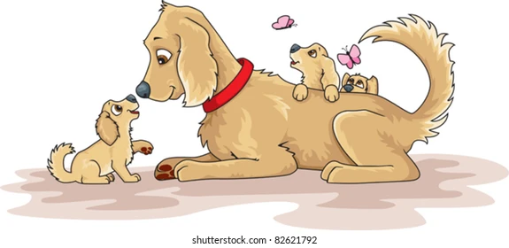
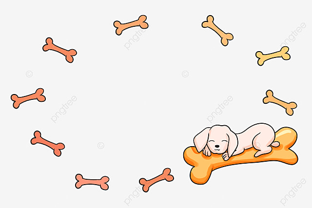
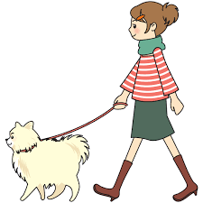
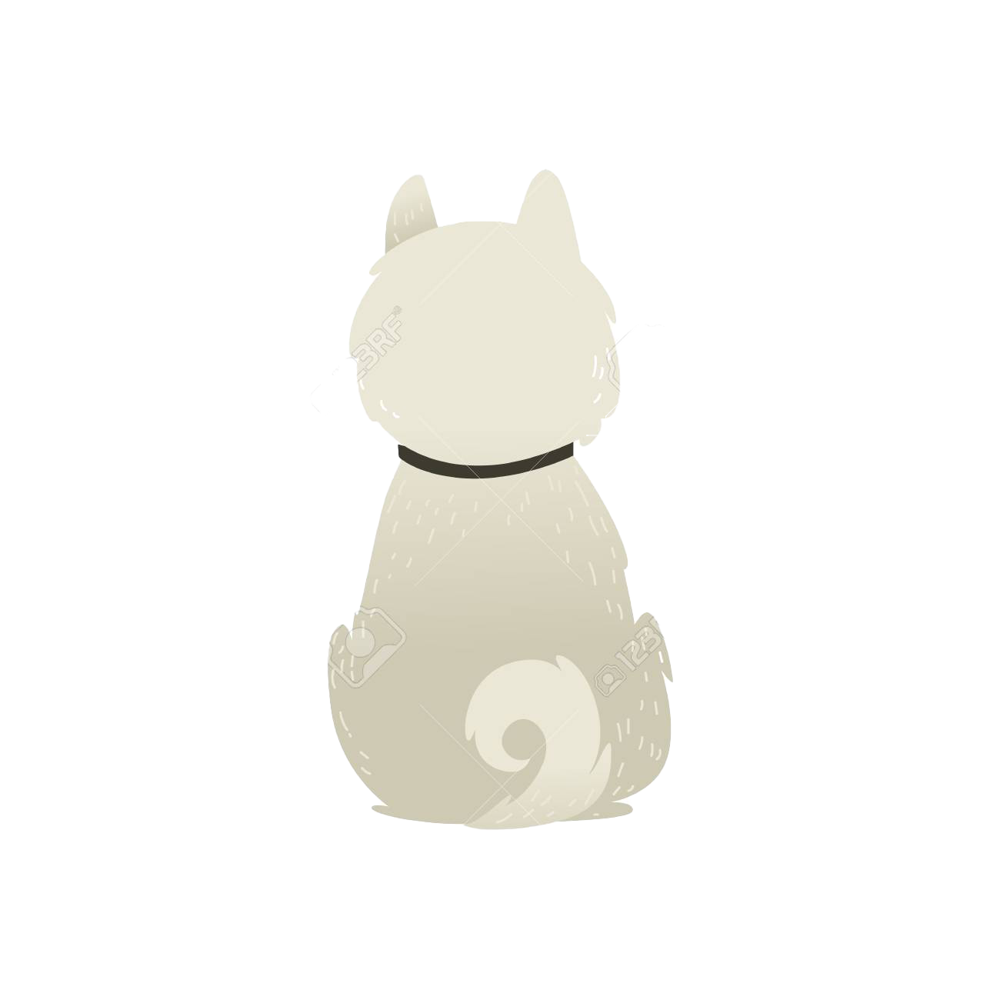

Life of Dogs

I love you, Mom. When I was a baby, my mom loved me more.

I wish I could find more bone.

I love my owner and I don't cheat with her.

WE LOVE DOGS!!
Here at Country Living, we adore our dogs. We even have a dog-friendly office! They are some of our favorite coworkers and truly members of the family. So if you're looking for heartfelt quotes about dogs, you've come to the right place. Whether you prefer large dogs, small dogs, or one of the popular breeds in between, these cute messages hold true.
And we know you have countless photos of your pup on your phone. When it comes time to post them, these quote work as the ideal dog instagram captions. We put together a list of famous dog quotes from dog lovers like Oprah Winfrey, Charles Schultz, and Mark Twain. We even found some funny ways to talk about your soulmate. Read on for our favorite dog quotes, and share them with your friends to brighten their day.
What's a dog breed?
People have been breeding dogs since prehistoric times. The earliest dog breeders used wolves to create domestic dogs. From the beginning, humans purposefully bred dogs to perform various tasks. Hunting, guarding, and herding are thought to be among the earliest jobs eagerly performed by the animal destined to be called “man’s best friend.”
For thousands of years, humans bred dogs toward the physical and mental traits best suited for the work expected of them. The sleek Greyhound types bred to chase fleet-footed prey, and the huge mastiff types used as guard dogs and warriors, are two ancient examples of dogs bred for specific jobs.As humans became more sophisticated, so did their dogs. Eventually, there emerged specific breeds of dogs, custom-bred to suit the breeders’ local needs and circumstances. The Greyhound, for instance, was the foundation type for the immense Irish Wolfhound and the dainty Italian Greyhound. All three have a distinct family resemblance, but you’d never mistake one for another.
So, then, when is a breed a breed and not just a kind or type of dog? The simplest way to define a breed is to say it always “breeds true.” That is, breeding a purebred Irish Setter to another purebred Irish Setter will always produce dogs instantly recognizable as Irish Setters.
Each breed’s ideal physical traits, movement, and temperament are set down in a written document called a “breed standard.” For example, the breed standard sets forth the traits that make a Cocker Spaniel a Cocker Spaniel and not a Springer Spaniel.
The AKC standard for each breed originates with a “parent club,” the AKC-recognized national club devoted to a particular breed. Once approved by the AKC, a standard becomes both the breeder’s “blueprint” and the instrument used by dog show judges to evaluate a breeder’s work.
There are over 340 dog breeds known throughout the world. The American Kennel Club recognizes 200 breeds.